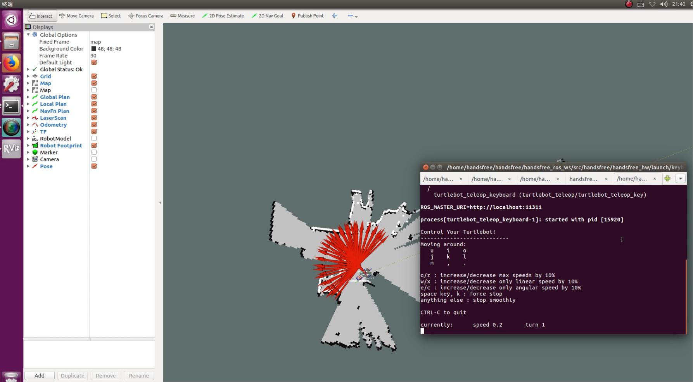
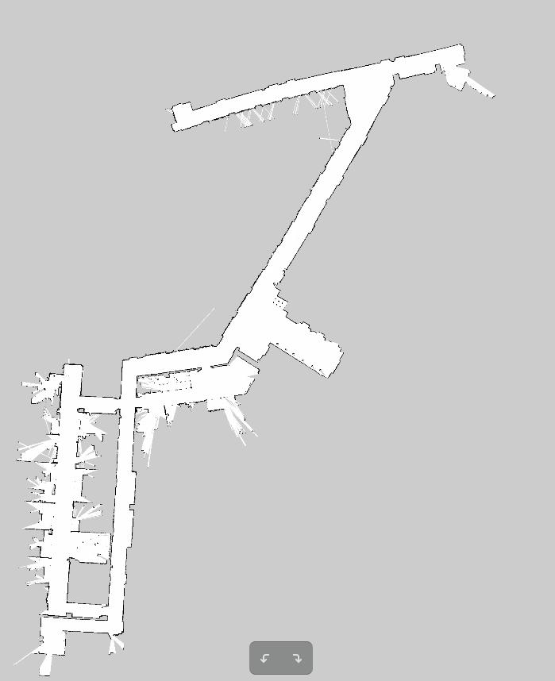

第二讲: HandsFree机器人遥控，建图，自主导航。视频地址
在实现导航功能之前需要对当前环境进行建图，在所下载的HandsFree_ROS包中所包含的地图是我们实验室的地图。所以你需要首先对你所在的环境使用激光雷达构建2维地图。
- 本节教程运行节点主要包含机器人抽象节点、激光节点、建图节点、遥控节点和可视化工具RVIZ
1. 雷达建图
由于工控机不能区分雷达和主控板,开机后,一定要先插主控板（单片机）的USB,再将雷达的USB连接到工控机。
然后在工控机上运行以下节点，如果没有购买显示屏，可以远程登录到工控机再执行以下步骤:
1.1. 机器人抽象节点
roslaunch handsfree_hw handsfree_hw.launch
1.2. 激光节点
如果使用rplidar：
roslaunch rplidar_ros rplidar.launch
若雷达正常，运行结果为：
ROS_MASTER_URI=http://Robot:11311
core service [/rosout] found
process[rplidarNode-1]: started with pid [13154]
RPLIDAR running on ROS package rplidar_ros
SDK Version: 1.5.7
RPLIDAR S/N: E94F9DF1C3E39AC4C3E698F91998340D
Firmware Ver: 1.22
Hardware Rev: 4
RPLidar health status : 0
如果使用hokuyo:
roslaunch handsfree_bringup hokuyo.launch
1.3. 建图节点
roslaunch rplidar_ros gmapping.launch
此节点最后若显示Registering First Scan,说明成功，结果如下图所示：
ROS_MASTER_URI=http://Robot:11311
core service [/rosout] found
process[slam_gmapping-1]: started with pid [4745]
process[move_base_node-2]: started with pid [4746]
[ INFO] [1517365860.923519401]: Laser is mounted upwards.
-maxUrange 10 -maxUrange 7.99 -sigma 0.05 -kernelSize 1 -lstep 0.05 -lobsGain 3 -astep 0.05
-srr 0.01 -srt 0.02 -str 0.01 -stt 0.02
-linearUpdate 0.5 -angularUpdate 0.436 -resampleThreshold 0.5
-xmin -10 -xmax 10 -ymin -10 -ymax 10 -delta 0.05 -particles 80
[ INFO] [1517365860.928967235]: Initialization complete
update frame 0
update ld=0 ad=0
Laser Pose= 0.2 0 0.00872684
m_count 0
Registering First Scan
1.4. 打开RVIZ可视化工具
rosrun rviz rviz -d `rospack find handsfree_2dnav`/rviz/HANDSFREE_Robot.rviz
rviz文件也可以手动配置，选择rviz软件界面的file -> open config,手动选择handsfree/handsfree_2dnav/rviz/ HANDSFREE_Robot.rviz文件作为其配置文件。如果正常的话，可以在RVIZ中看到机器人模型及激光雷达扫描到的可视化数据，然后进行下一步打开键盘遥控节点建图。

1.4.1. 遥控节点
启动键盘遥控节点:
roslaunch handsfree_hw keyboard_teleop.launch
利用键盘遥控机器人在准备导航的环境中缓慢移动，使RVIZ中显示的地图逐渐补全，直到将整个环境的地图建好为止。 当地图建好之后就要对地图进行保存。
1.5. 保存地图
在终端中打开想要保存地图的文件夹（建议保存在handsfree_2dnav/map中）
roscd handsfree_2dnav/map/
运行保存地图的节点：
rosrun map_server map_saver -f my_map
-f 后面跟的是地图保存的名字，my_map名字可以按照自己的需求更改
此命令将生成将生成.pgm和.yaml两个文件。到此，建图过程完成。最终生成的我们实验室的地图：

1.6. 远程建图
建议远程设置(如果IP有变化,请及时更改),将工控机作为MASTER,在工控机上运行前三个节点,遥控和可视化部分可以在自己笔记本上运行。